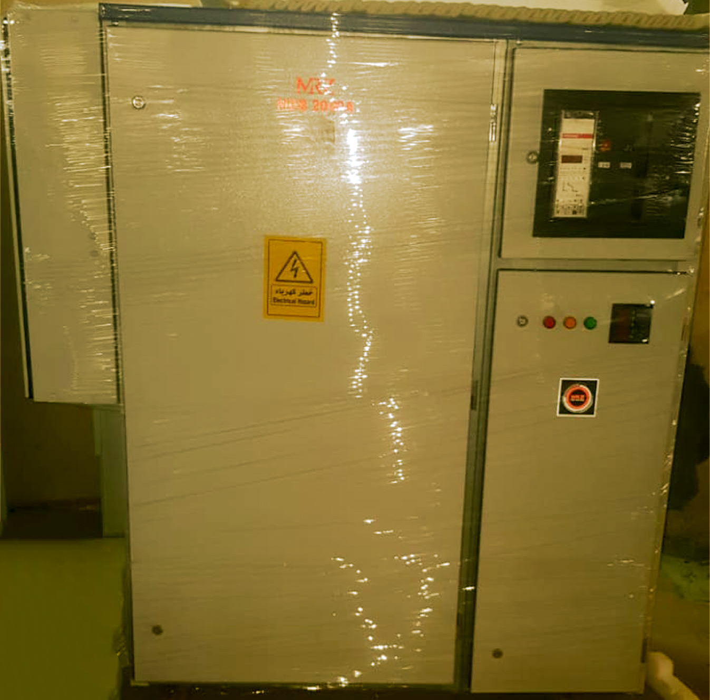
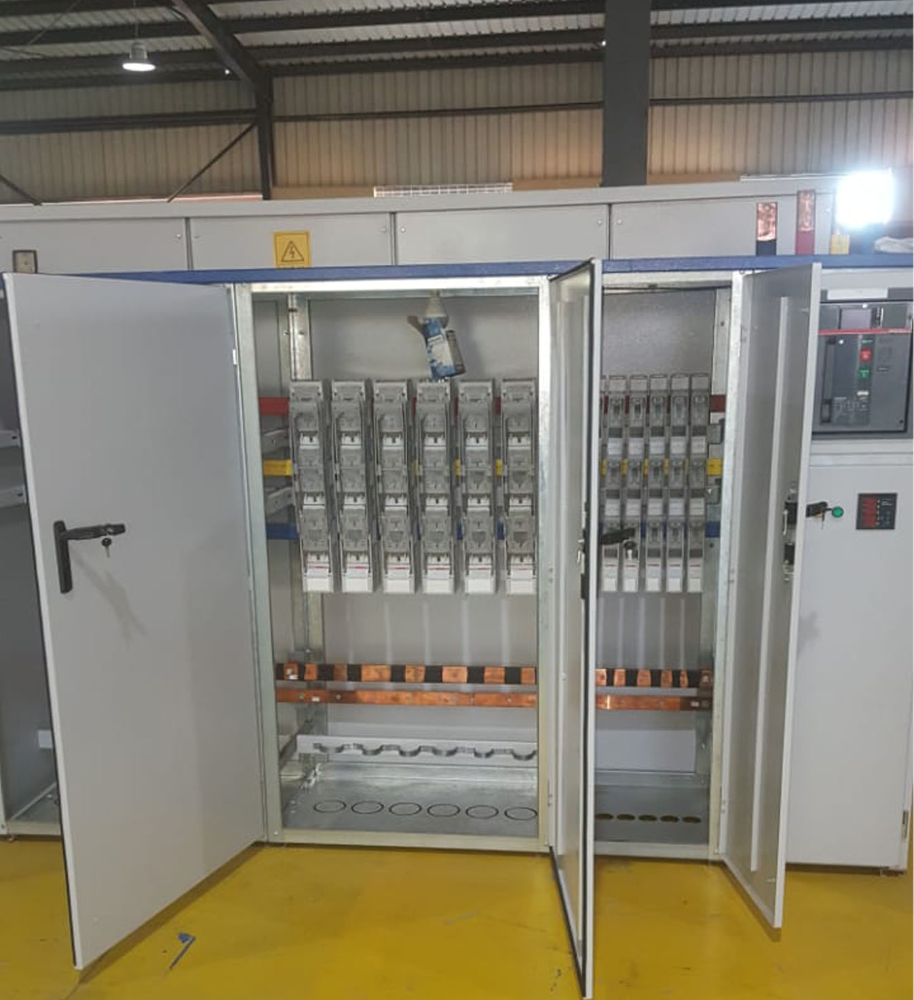

<div id="back">
  <div>
    <header>
      <h1 style="color:#0b5ed7; margin-top: 100px;">
        Low Voltage Distribution Panels For Transformers from 100KVA Up To 3500KVA:-
      </h1>
      <hr style="color: #0b5ed7  ; height: 2px; width: 90%; margin-left: 100px;"  >
    </header>
    <div  id="sl" >
      <swiper [config]="config">
        <div class="swiper-wrapper">
            <div class="swiper-slide">
              
                </div>
            <div class="swiper-slide">
                   
                </div>
                <div class="swiper-slide">
                   
                </div>
            </div>
             <!-- Add Pagination -->
             <div class="swiper-pagination"></div>
             <!-- Add Arrows  -->
             <div class="swiper-button-next"></div>
            <div class="swiper-button-prev"></div>
        </swiper>
        <div class="container">
          <p>MRZ manufactures low voltage panels for transformers up to 3500KVA.The enclosure is made of sheet steel,
            is painted with a light grey electrostatic powder painting, the finish coat is grey color.
             It is designed to accommodate different types of switching devices such as MCCB'S,ACB'S,Switche Fuse Disconnectors,Measuring Devices and Busbars.
             it is designed according to IEC 439-1.
            </p>
          </div>
    </div>
  </div>


</div>
